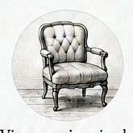
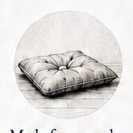

Found and made.
Vintage pieces restored and reupholstered, paired with dog beds made by hand in small batches.
The Interlude State is a small furniture studio creating considered pairings for homes shared with dogs.
The studio is drawn to furniture with character, textiles with a point of view, and the quiet details that make a home feel lived in.
Vintage furniture. Handmade dog beds.
One considered pairing.

Vintage pieces restored and reupholstered, paired with dog beds made by hand in small batches.

Color, texture, pattern, and form brought together without matching exactly.
1% of every sale is set aside for local 501(c)(3) organizations devoted to animal welfare.
We believe dogs are part of the home—not an afterthought to it.
The Interlude State began with a simple observation: the furniture we love and the things we buy for our dogs rarely seem to belong to the same world.
Vintage furniture carries history, character, and a sense of place. The things made for our dogs are often designed around function, but rarely considered as part of the room.
We wanted to reconsider that relationship.
Each pairing begins with a vintage piece chosen for its character, proportions, and potential, and a textile with a point of view. From there, a dog bed is developed to complement it—not to match exactly, but to establish a quiet relationship between the two.
The furniture and bed are never separated. They are one composition, made to live together.
Small in scale and intentionally local, The Interlude State works in limited runs, allowing each pairing to be selected, developed, and finished with care. We are interested in beautiful materials, objects with a past, and the everyday rituals that make a house feel like home.
The furniture is part of the room. So is the dog bed.
They should be considered with the same care.
A pairing isn't about making two objects match. It's about finding the right relationship between them—through fabric, color, texture, proportion, and form.
The result is not a matching set, but a considered relationship.
Join our mailing list for the first look and studio updates.